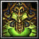

Heartseeker
[Bow]
+34,000 Damage
+1,800 Agility
+2,500 Health
+5% Skill Damage
+5% Critical Chance
Passive: Every 6 seconds power up next attack with Corrupt Arrow (50x Agi AoE Damage, and heals you for 10% of max Health)
BowMaster Specialty Heartseeker: Animation and name of Arrow Rain (T) is changed. It also casts faster, does more damage, stuns, and reduces enemy armor by 175 for 5 seconds